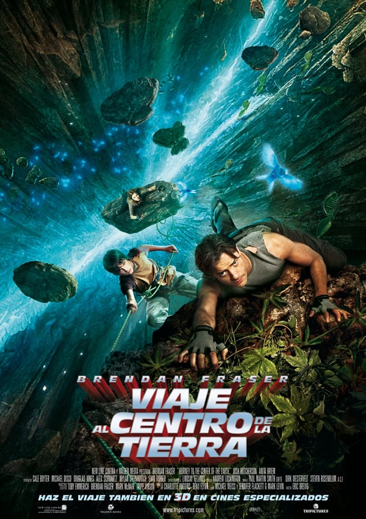
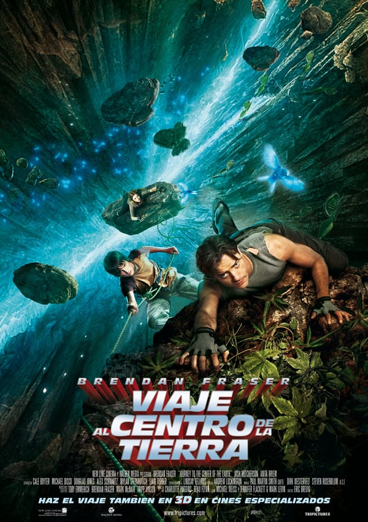

Datos generales
Soy Ciro Passalacqua, tengo 20 años y soy estudiante de la carrera de Diseño multimedial en la UNLP. Me gusta la música, el diseño y tocar la guitarra : ) . Bienvenidos al sitio web dedicado a mi videojuego, ojalá les guste!
Datos sobre el videojuego
Aventura con Minijuego integrado basado en el libro 'Viaje al centro de la tierra' de Julio Verne. Esta Aventura fue creada a partir de la unión de dos trabajos prácticos de la materia Tecnología Multimedial 1: una Aventura Gráfica al estilo 'Elige tu propia aventura' y un Minijuego ambientado en el cuento de Julio Verne. Al unirlos y aplicar la Programación orientada a objetos, creé este Juego en el cual puedes tomar decisiones y elegir tu propio destino en la historia. A la vez, en una de ellas se ve incorporado el minijuego el cual hay que superar para continuar avanzando. Basándome en el libro de Julio Verne y en las películas producidas, creé la historia de la Aventura, buscando imágenes en diferentes sitios pero sobre todo extrayéndolas de la película 'Viaje al centro de la tierra'. Al hacer la página, busqué crear un diseño interactivo, simple y ambientado en los colores e imágenes de la historia. Como algo adicional, puedo agregar que en el proceso de creación de la Aventura fui encontrando mejores maneras para seccionar mi código, tales como crear clases variadas como 'Pantalla' o 'Botones', las cuales, en un principio, me dificultaron el manejo del código, pero más tarde me ayudaron a simplificarlo y darle un mejor manejo.
A continuación, hay algunos ejemplos de referencias y métodos que utilicé a la hora de crear el juego. Un cuadro sinóptico que me ayudó a realizar el camino que iba a tomar mi aventura, un libro que tengo en casa del mismo cuento que mi aventura, y la película del 'Viaje al centro de la tierra' de la cual utilicé la mayoría de las imágenes.
 
